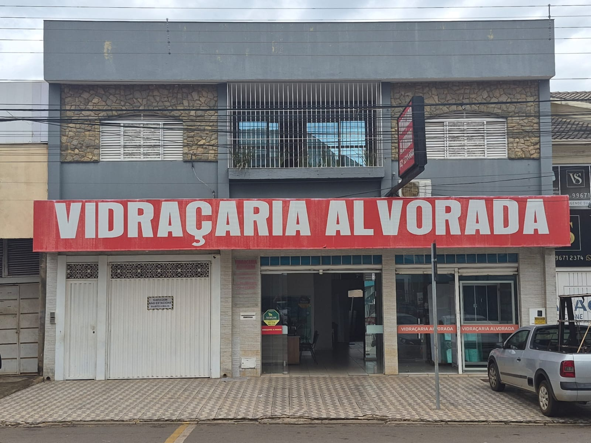
SOLUÇÕES EM VIDROSPARA TODOS OS
SEUS PROJETOS
Qualidade, segurança e sofisticação em vidros para ambientes residenciais, comerciais e empresariais.
em cada detalhe
Todo tipo de vidro para o seu projeto
Residencial, comercial e empresarial.
Trabalhos que
inspiram
Confira alguns projetos realizados pela Vidraçaria Alvorada e veja como o vidro pode transformar ambientes com beleza, funcionalidade e modernidade.
Ver mais projetos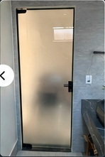
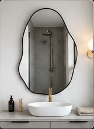
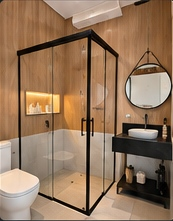
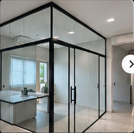
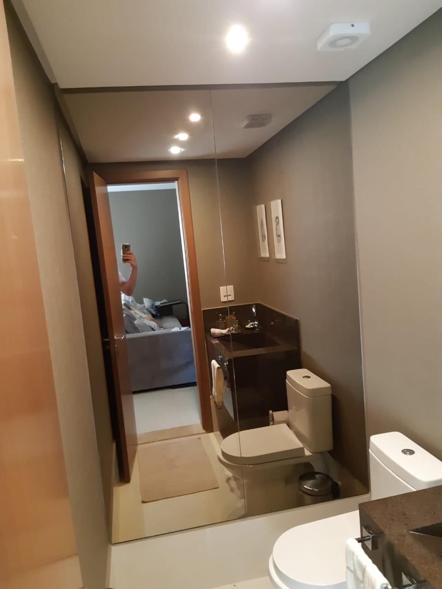
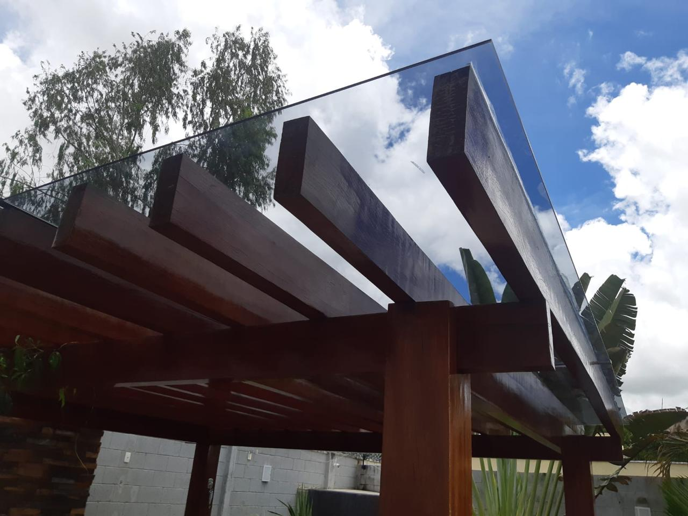
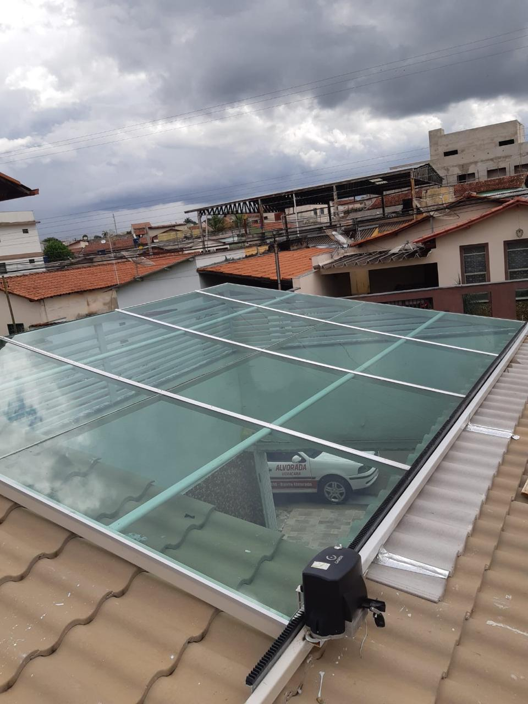
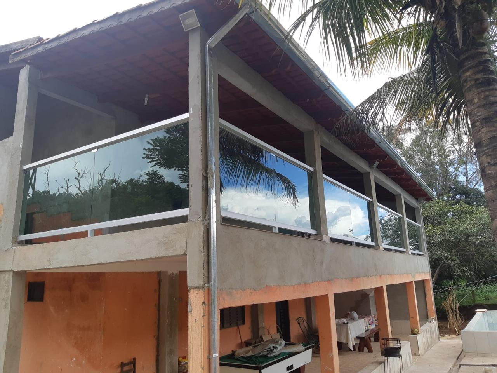
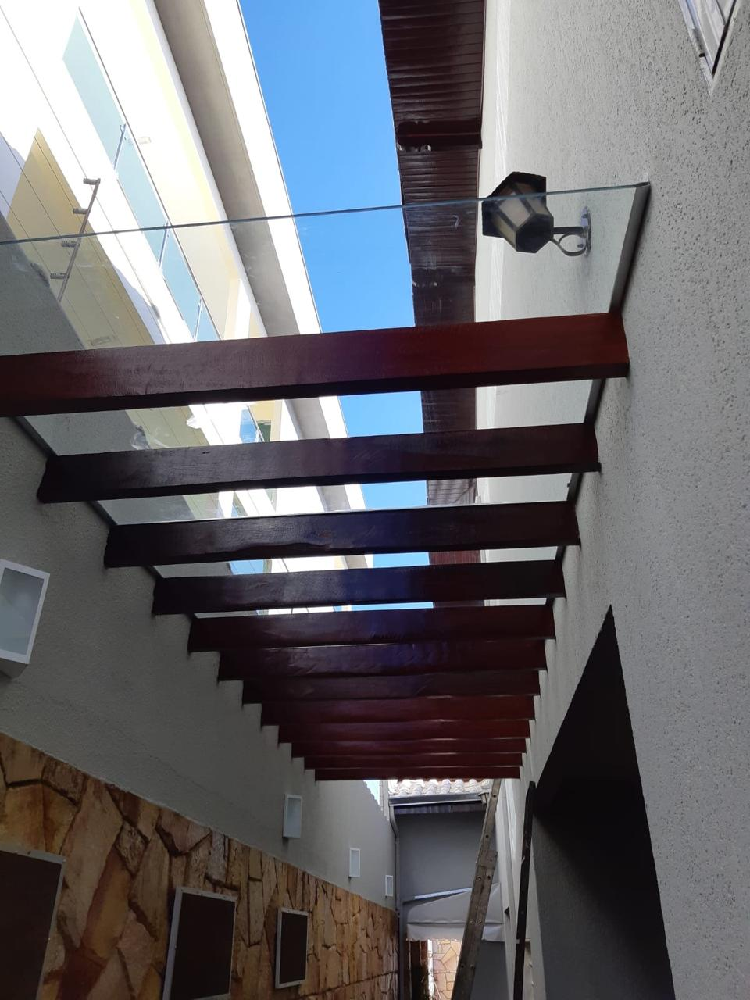
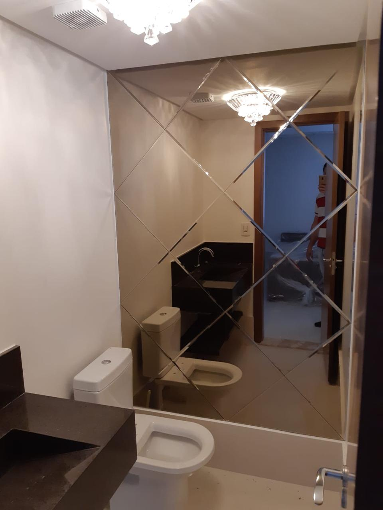
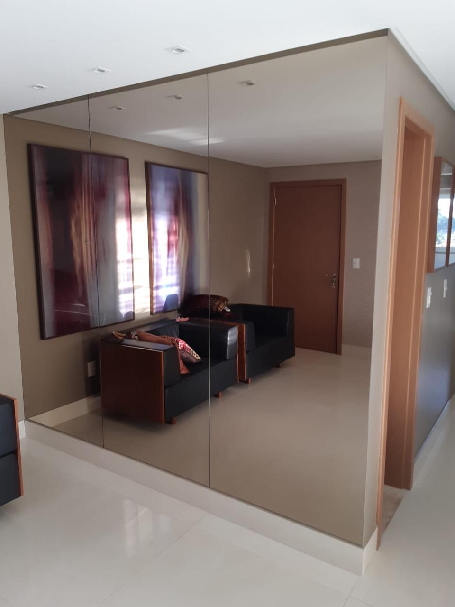
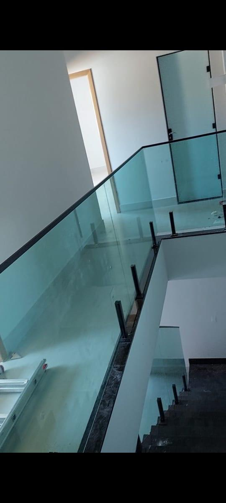
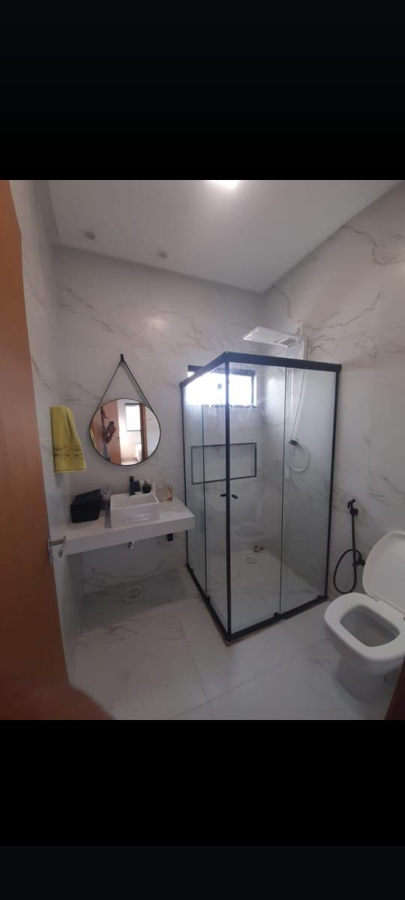
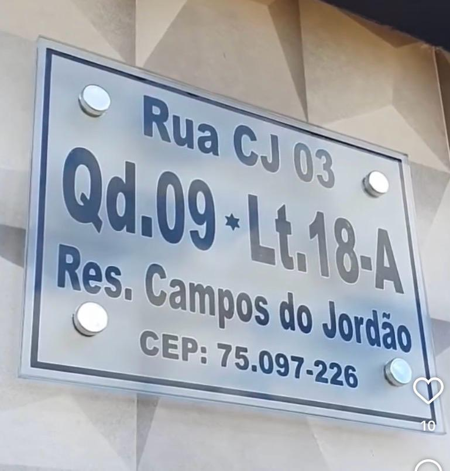
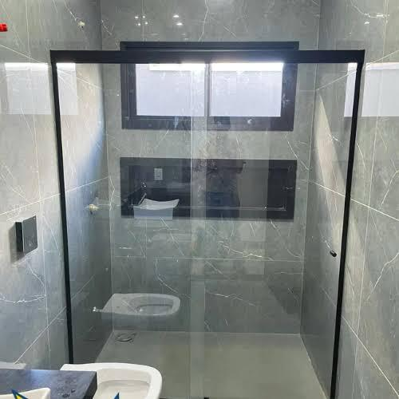
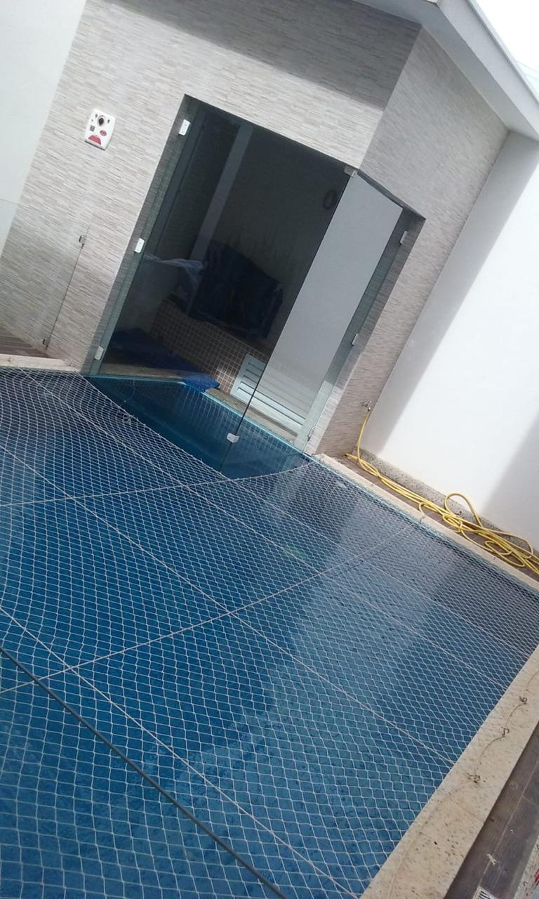
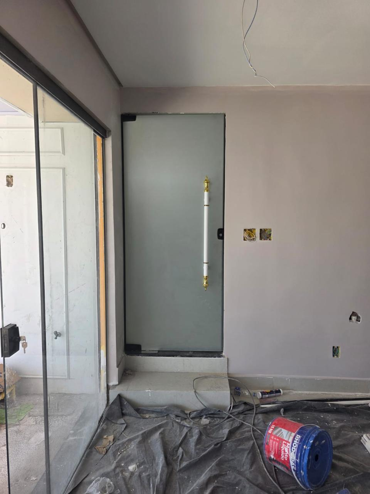
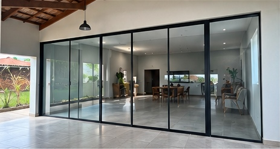
VIDRAÇARIA ALVORADA
TRADIÇÃO E CONFIANÇA DESDE 1981A Vidraçaria Alvorada atua desde 1981, oferecendo soluções completas em vidros para residências, comércios, condomínios e empresas. São mais de quatro décadas de experiência, sempre com foco na qualidade, segurança e um atendimento personalizado.
de experiência
satisfeitos
personalizado
e durabilidade